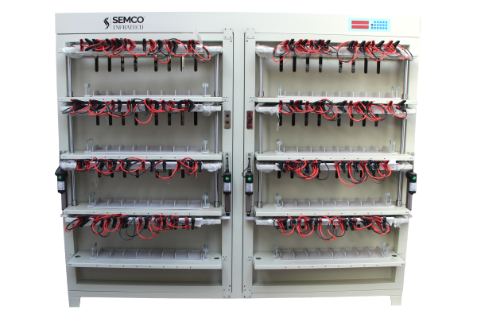
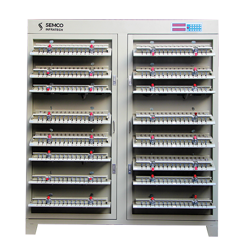
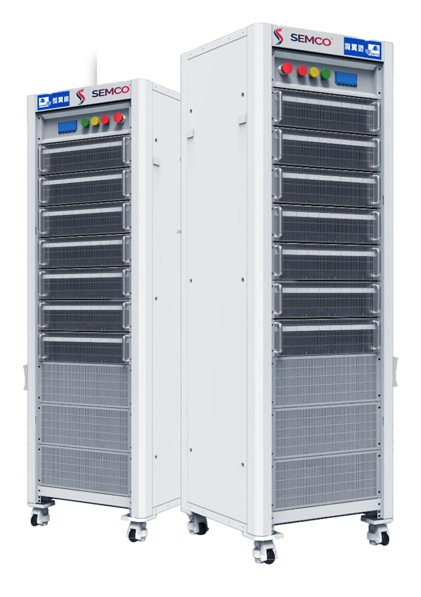
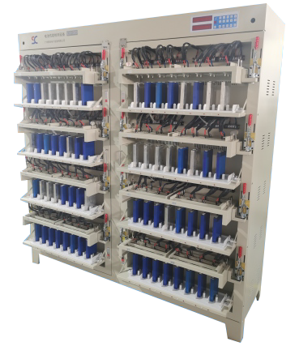
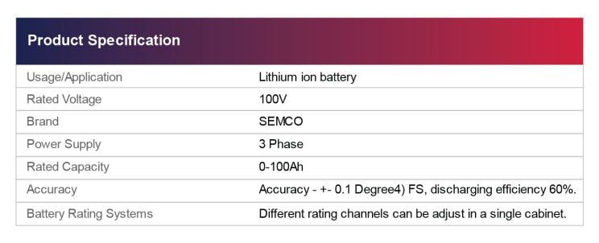

Is your battery not working up to the prescribed standards? Do you fear malfunctioning of the battery cell at any point in time which could lead to a disaster at your battery plant?
Are you looking at automated solutions with a consistent stable battery output that can improve the efficiency of your battery cell and provide accurate and reliable results without the need for manual intervention?

If you have all these queries in your mind then we have an exact solution.
The remedy to all your queries is a Battery Cell Tester.
But,
Why Cell Testing is Done?
Battery cell testing is done to ensure the quality, reliability, and safety of battery cells. It involves measuring the performance and characteristics of individual cells to determine their capacity, energy density, internal resistance, and other key parameters. This information is used to evaluate the performance of the cells and to identify any defects or issues that may affect their functionality or safety. Battery cell testing is essential in the development and manufacturing of battery cells for various applications, including electric vehicles, consumer electronics, and renewable energy systems. It helps to ensure that the cells meet the required standards and can perform reliably over their expected lifetime, which is critical for the safety and performance of the end product.

And,
How Cell Testing is Conducted with a Battery Cell Tester?
Battery cell testing typically involves connecting the battery cell to the tester using appropriate cables and connectors, configuring the tester with the appropriate test parameters, and applying a load or current to the battery cell to measure its voltage, current, capacity, resistance, and temperature over a specified test duration. The data is then analyzed to evaluate the battery cell's performance and determine its suitability for a specific application. Battery cell testing is an important step in ensuring that battery cells are safe, reliable, and meet the necessary performance requirements.
Now you must be thinking that you have the solution but which battery cell tester is good for your setup then worry not we have the exact cell tester.
Semco Battery Cell Tester & Hynn Semco duct series machines are both reliable, accurate, and easy to use. The testers feature a wide range of tested parameters, including voltage, current, and temperature. They automatically calculate the constant current charge ratio, capacity loss, and discharge efficiency.

Designed with up-to-class technology that matches national as well as international standards that can meet all your requirements of cell testing.
Come to us and avail the best-in-class solutions for Cell testers for Cylindrical as well as Prismatic cells. Semco is one of the leaders in Lithium-ion battery testing and assembly equipment. We now not only offer but also provide professional installation of services along with the availability of spares. Our inventory is full of Cylindrical and Prismatic Cell Testers available in both Linear and Regenerative types.
Cylindrical cell testers come in the ranges from SI ES/CT 5V 3A/ 6A-512 CH for testing 18650, 21700, 26650, 32700, and 33140 cells in size. Whereas, the Prismatic cell tester comes in an array of SI ES 5 V 10/20/30/60/100/120/240 for testing all the above-mentioned cells. These testers offer a range of features that can help you test the cells' charge and discharge, real-time detection, multiple conditions for cell sorting, and automatically calculate the constant current charge ratio, capacity loss, and discharge efficiency. With our cell testers, you will get assured tests that will enhance your battery production.

A few among them are:
- Cell cycle life test
- Cell capacity test
- Cell charge/discharge characteristics test
- Cell overcharge/over-discharge endurance test

In an attempt to improve and accelerate electric vehicle development, Semco has developed a series of battery cell testers. These are bi-directional, multi-channel DC power suppliers that test, diagnose, characterize, and validate battery cells.
Our devices assure you of the highest quality and accuracy of testing results with benefits such as the highest regenerative efficiencies, fastest results, minimum space requirements, and advanced energy management.
You can rely on us in case of any of the points mentioned above for a trusted solution. If you want a demo of our products, you can visit our YouTube channel, and for trails, you can meet us at our headquarters in New Delhi Patparganj or at our Bengaluru office.
About Semco - Established in 2006, Semco Infratech has secured itself as the number 1 lithium-ion battery assembling and testing solutions provider in the country. Settled in New Delhi, Semco gives turnkey solutions for lithium-ion battery assembling and precision testing with an emphasis on Research and development to foster imaginative, future-proof products for end users.